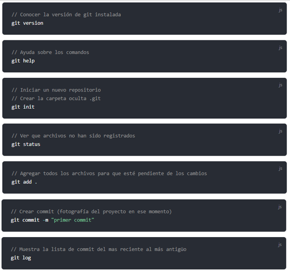

.png)

|
Está guía está diseñada para poder obtener el código del curso de GIT / GITHUB de una forma amigable Git es un sistema de control de versiones Pero... ¿Qué es un sistema de control de versiones ? Los Sistemas de Control de Versiones Centralizados (VCS), como por ejemplo Subversion, que es una herramienta en la que se ha confiado para albergar el histórico de revisión de versiones, es un punto centralizado, lo cual puede llegar a suponer una merma de trabajo si perdemos la conectividad de la red. Los Sistemas de Control de Versiones Distribuidos (DVCS) salvan este problema. Algunos ejemplos de sistemas distribuidos, aparte de Git, son Mercurial, Bazaar o Darcs. En este tipo de herramientas, los clientes replican completamente el repositorio. |
Es un software de control de versiones, su propósito es llevar registro de los cambios en archivos de computadora y coordinar el trabajo que varias personas realizan sobre archivos compartidos (También puedes trabajar solo no hay problema). Existe la posibilidad de trabajar de forma remota y una opción es GitHub.
Aprendamos los primeros comandos con git
En resumidas cuentas nosotros realizamos cambios en nuestros archivos, el comando status verificará que archivos han sidos modificados. Cuando deseemos registrar esos cambios tendremos que agregarlos con add . así ya estará listo para poder hacer un commit. El commit realiza la copia de ese instante para poder volver en el tiempo si es que es necesario.
Refencias Bibliograficas
MIT Licensed | Copyright © 2018-present Evan You. Recuperado de: https://bluuweb.github.io/tutorial-github/guia/fundamentos.html#creando-alias-globales.